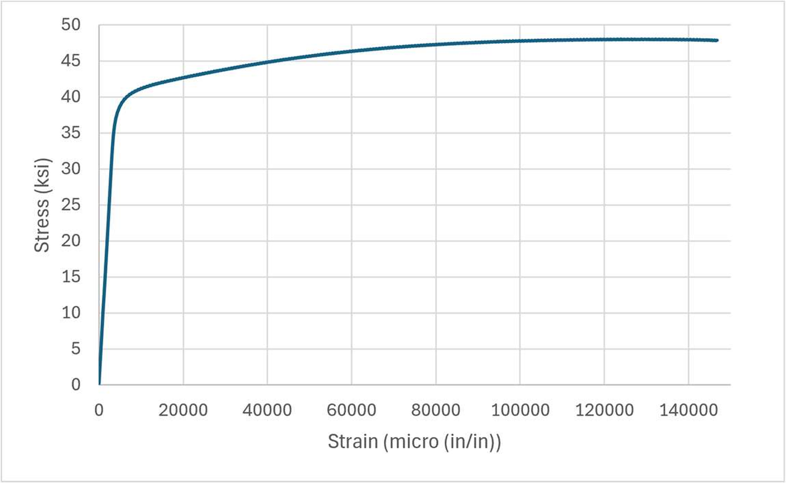
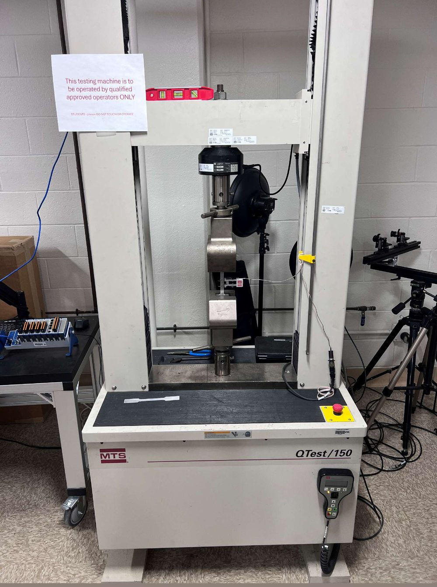
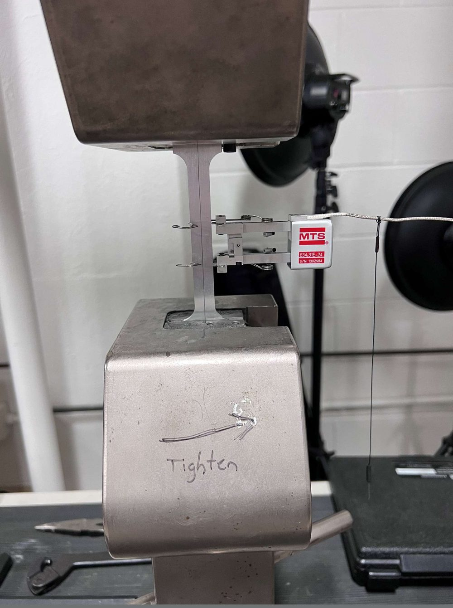
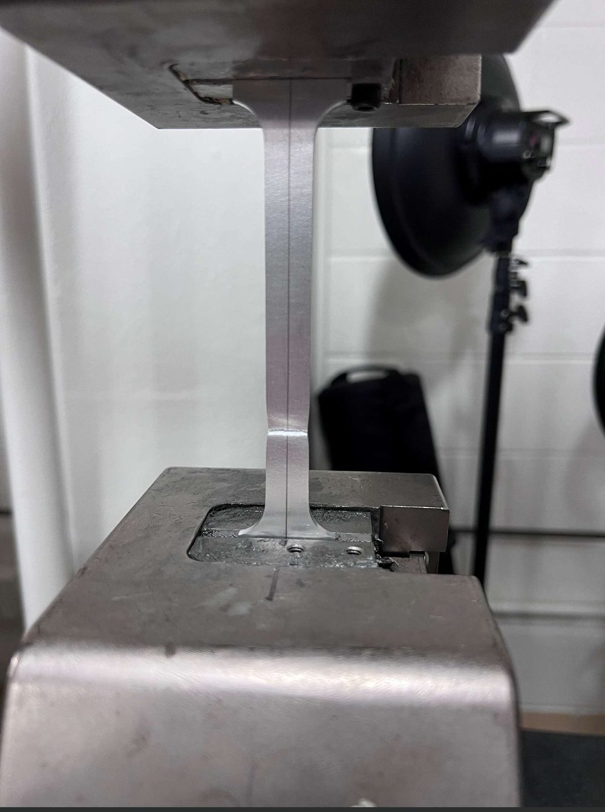
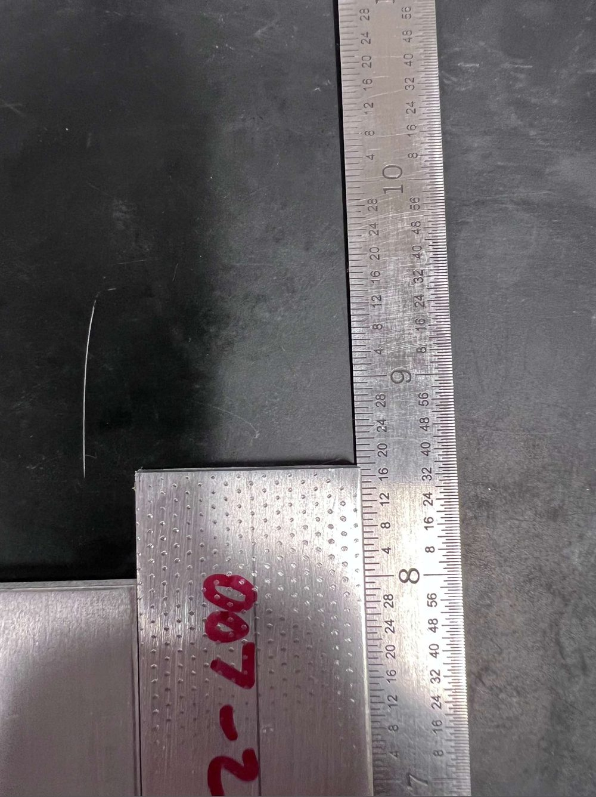
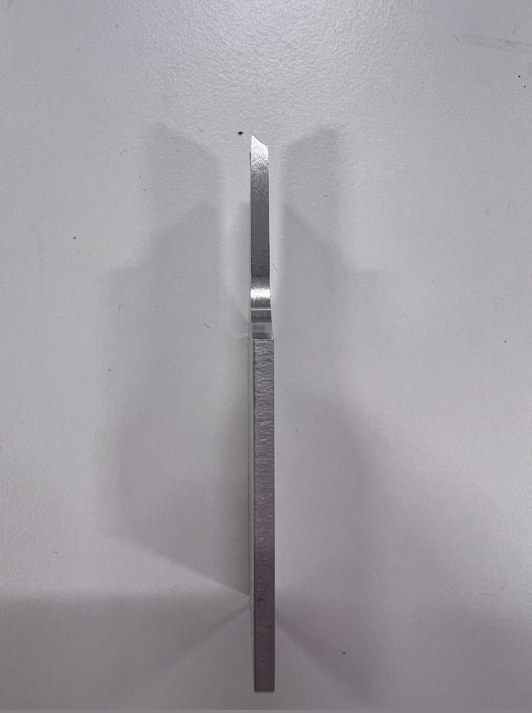

6061-T6 Aluminum Tensile Test
This lab characterized the tensile stress–strain response of a metallic specimen. The specimen was measured, mounted in wedge grips, fitted with an extensometer, and pulled at a constant rate while load, crosshead displacement, strain, and time were recorded until fracture.
- Course
- MAE 3181 Materials and Structures Laboratory, UT Arlington
- Equipment
- MTS QTest/150 universal testing machine, TestWorks software, clip-on extensometer
- Date
- Test run Sept. 18, 2026

Results
| Property | Value |
|---|---|
| Young’s modulus, E | 10,093.5 ksi |
| Yield stress, 0.2% offset | 39.6 ksi at 5,846 µε |
| Yield stress, Johnson’s apparent elastic limit | 39.5 ksi at 5,756 µε |
| Ultimate stress | 48.052 ksi at 123,972.8 µε |
| Fracture stress | 47.879 ksi at 146,811.9 µε |
The curve shows the classic ductile shape: a linear elastic region, yielding, strain hardening to the ultimate stress, necking, and fracture. The two yield methods agree closely but not exactly, as expected since both are graphical conventions rather than a sharp physical point.
Method
- Measured the specimen with digital calipers (original area 0.0626 in², gauge length 1.000 in).
- Aligned and gripped it in wedge grips, which self-tighten under load, and clipped the extensometer on at mid-length to read strain directly on the specimen, excluding frame and grip compliance.
- Pulled at a constant crosshead rate while TestWorks recorded load, displacement and strain.
- Removed the extensometer once the ultimate stress was reached to protect it; fracture strain was estimated from crosshead displacement instead.
- Converted data to engineering stress and strain in Excel; found E from the slope of the linear region and yield by the 0.2% offset and Johnson’s methods.


Fracture
The fracture surface sits at about 45° to the loading axis, characteristic of a ductile, shear-dominated failure. The fractured specimen is also visibly longer than an untested one, confirming significant plastic deformation before failure.



Sources of error and recommendations
- Grip misalignment can add bending to the load; load-cell and extensometer calibration limits and the finite sampling rate also affect the data.
- Recommended testing several specimens and averaging, and using a full-field non-contact strain method for better accuracy.